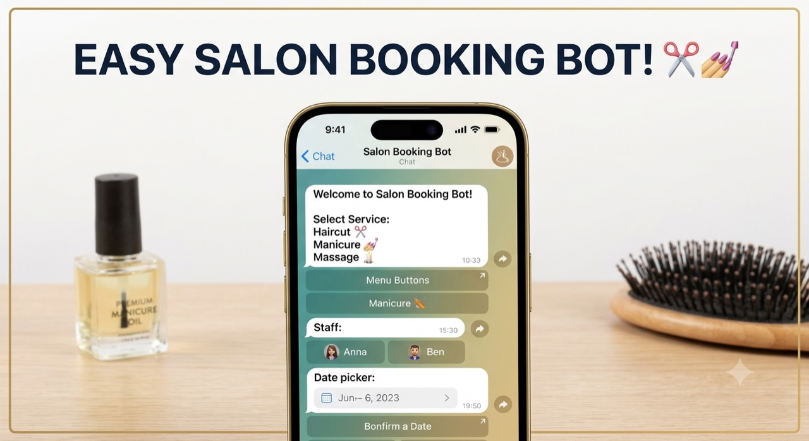
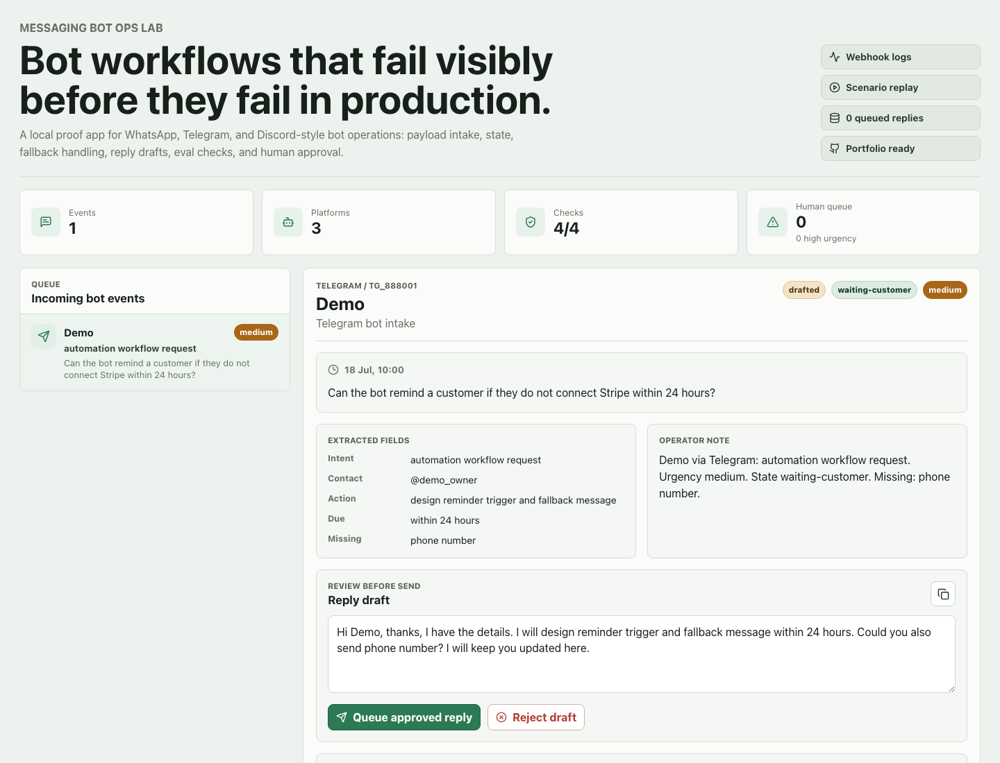
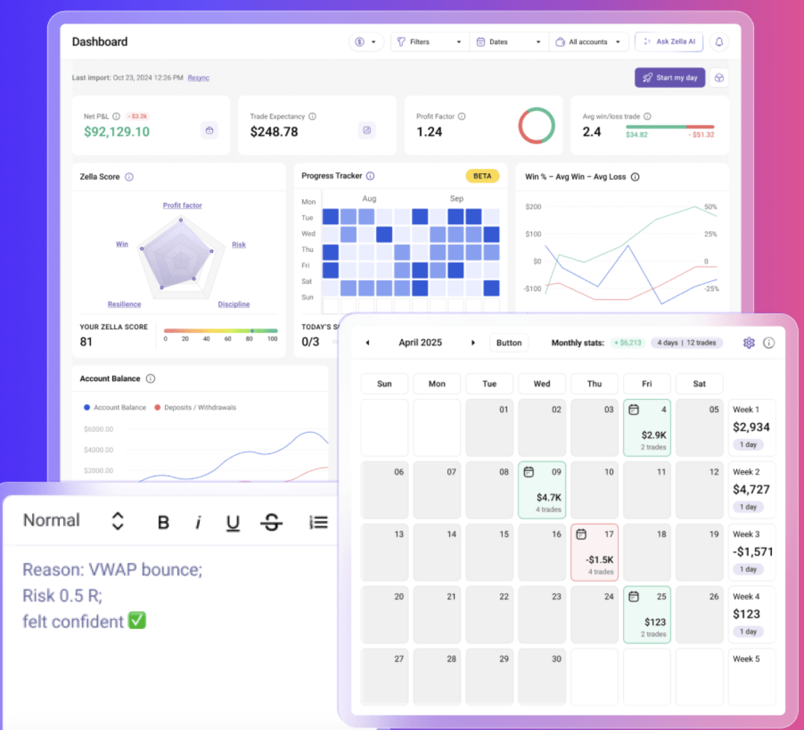

Channel Agent Runtime
Config-driven multi-channel runtime where Telegram, Discord, Slack, and WhatsApp-style events normalize into one LangGraph state graph for route selection, tool execution, JSONL audit, and approval-first replies.
I build messaging bots and bot backends around the parts that matter in real use: platform-specific payloads, webhooks, conversation state, approval queues, LLM fallback behavior, and operational visibility.
This page is targeted at bot-development roles such as WhatsApp Business API, Telegram Bot API, Discord API, Slack, LLM workflow, and webhook automation work.
Short walkthrough: channel runtime, Telegram, Discord, WhatsApp-style webhook/operator proof, and the honest production boundary.
Open videoConfig-driven multi-channel runtime where Telegram, Discord, Slack, and WhatsApp-style events normalize into one LangGraph state graph for route selection, tool execution, JSONL audit, and approval-first replies.

Appointment-setting Telegram bot with inline keyboard flow, stylist/service/date/time selection, SQLite-backed bookings, admin commands, reminders, and optional operations webhook events.
Discord bot with slash commands, warning ladder, tickets, auto-moderation, audit logging, SQLite case history, safe demo incidents, and optional LLM moderation assistance.

Local bot operations system with provider-shaped webhook endpoints, persisted conversation state, raw payload visibility, intent/urgency extraction, eval checks, and approval/rejection endpoints before outbound replies.

Trading journal product with Telegram bot commands, web dashboard, analytics, TradeLocker integration, and Telegram Mini App style workflow. Useful proof that bot actions can connect to real stored workflow state, not just chat demos.
Telegram and Discord proof are live-testable bot examples. Slack auth and send checks are validated in the runtime. WhatsApp work is currently webhook handling and local workflow proof; production sending requires Meta Cloud API or Twilio sender setup, templates, opt-in rules, and account credentials. The demos are portfolio proof and implementation evidence, not inflated enterprise client deployments.
Available for remote freelance, part-time, or contract bot-development work across Telegram, Discord, Slack, and WhatsApp-style systems.